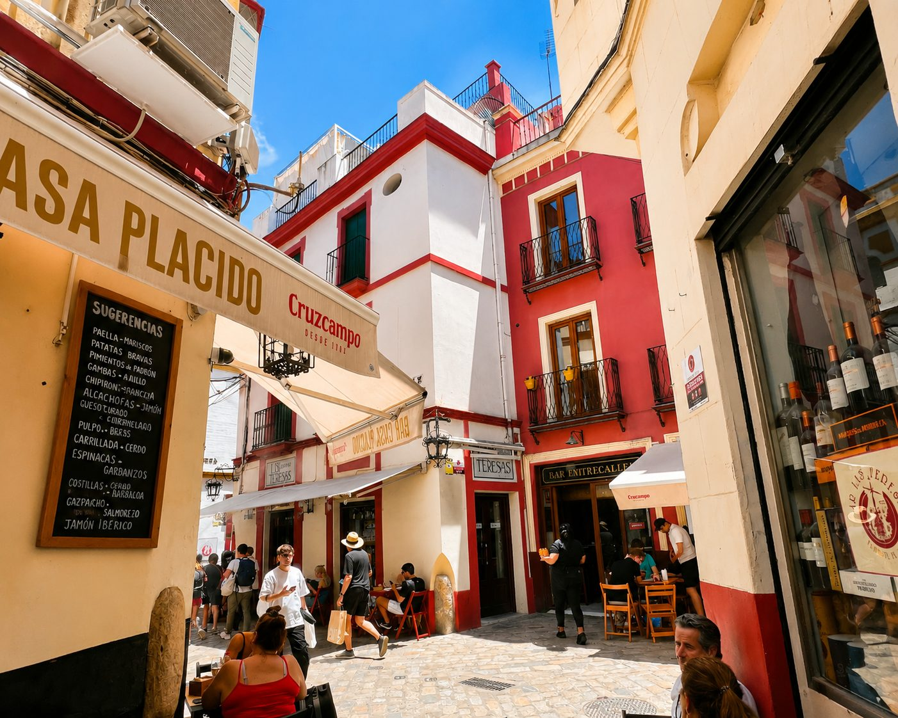
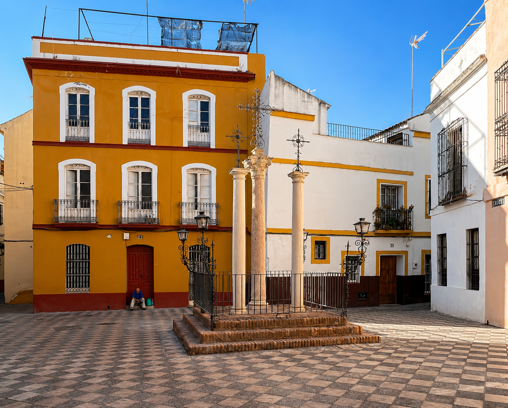

Santa Cruz er Sevillas gamle jødiske kvarter, kjent for trange hvitkalkede gater, og fritt tilgjengelig å utforske. Hvite hus med gule rammer, bougainvillea i hvert hjørne, duften av appelsinblomster i de smale gatene. Men historien bak dette vakre bildet er langt mer fascinerende enn postkortene forteller.
Designet for turister – i 1929
Her kommer hemmeligheten som overrasker nesten alle: Santa Cruz slik vi ser det i dag ble i stor grad designet og ferdigstilt til verdensutstillingen i Sevilla i 1929. Ideen var å skape noe genuint andalusisk – romantisk, regionalistisk og visuelt overveldende – for nettopp å tiltrekke besøkende til Sevilla.
Det er noe fascinerende og nesten morsomt ved tanken: at noen i 1929 allerede hadde turistblikket. At de forstod at det hvite og det blomstrende og det labyrintaktige ville gjøre noe med folk. Og de hadde rett – nesten hundre år senere virker det fremdeles akkurat like sterkt.
«Santa Cruz ble designet for å forføre besøkende i 1929. At det fremdeles virker like perfekt nesten hundre år senere, sier noe om hvor godt de lyktes.»

La Judería – det som lå her før
Lenge før 1929 var dette kvarteret kjent under et annet navn: La Judería – det jødiske kvarteret. I middelalderen var Sevilla hjem til en av de største jødiske befolkningene på den iberiske halvøy, og dette var deres bydel – et tett, livlig, pulserende hjerte av handel, lærdom og kultur.
Historien til La Judería er full av det som gjør historien menneskelig og rystende på én gang. Moskeer ble gjort om til synagoger. Synagoger ble gjort om til kirker. Familier som hadde levd her i generasjoner ble fordrevet i 1391 og igjen i 1492 – da Fernando og Isabel bestemte at jødene skulle forlate Spania. Noen av de smaleste gatene og de lukkede patioene i Santa Cruz bærer ennå på ekkoet av det som var.
Gater med dramatiske navn
En av de tingene jeg elsker mest med å gå gjennom Santa Cruz er gatenavnene. De er ikke tilfeldige – de forteller historier, noen romantiske, noen dystre, noen mystiske.
At Livets gate og Dødens gate ligger side om side i denne labyrinten er ikke tilfeldig. Santa Cruz er en bydel som alltid har rommet begge deler – det vakre og det tragiske, det lysende og det mørke – like tett på hverandre som husene i de smale gatene.
Sevillas høyeste punkt – og mitt bergenske blikk
Jeg kommer fra Bergen – en by omgitt av høye fjell. Sevilla er kjent for å være flat, og det er den stort sett. Men midt inne i Santa Cruz-kvarteret finner du faktisk Sevillas høyeste punkt: en liten, tilsynelatende helt vanlig gate som heter Calle Aire – rundt 115 meter over havet. Ingen skilt, ingen utsiktsplass, ingen turistattraksjoner.
«Jeg kommer fra Bergen med sine høye fjell. Sevillas høyeste punkt er en helt vanlig liten gate – Calle Aire – midt i labyrinten. Ingen skilt, ingen utsikt. Bare en gate som alle andre, 115 meter over havet. Det er så Santa Cruz.»
Labyrinten som aldri gir deg alt på én gang
Santa Cruz er en eneste stor labyrint – og det er meningen. En sving for mye, et hjørne du ikke la merke til – og vips er du et sted helt annet enn du hadde planlagt. Selv om Santa Cruz med årene har blitt mer besøkt, finnes det fremdeles steder her inne hvor tiden har stått stille. Det krever litt tålmodighet og litt vilje til å gå seg bort – men det er alltid verdt det.

- Tidligere La Judería – det historiske jødiske kvarteret i Sevilla
- Dagens utseende i stor grad designet til verdensutstillingen i 1929
- Sevillas høyeste punkt ligger midt i bydelen – ca. 115 m o.h.
- Gater med navn som Calle del Agua, Calle de la Muerte og Calle de la Vida
- Fritt tilgjengelig – ingen billett nødvendig
- Beste besøkstid: ettermiddag eller i siestatiden
Ofte stilte spørsmål
Santa Cruz var tidligere La Judería, det historiske jødiske kvarteret i Sevilla.
Nei, bydelen er fritt tilgjengelig og krever ingen billett.
Ettermiddag eller i siestatiden, når gatene er roligst og stemningen mest autentisk.